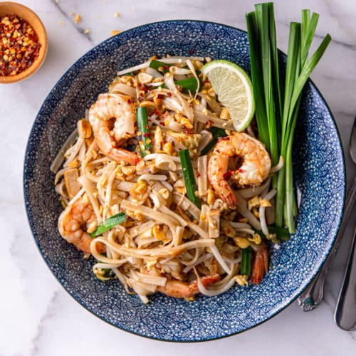

Pad Thai

Description
The authentic version of this iconic Thai noodle dish
is made with stir-fried rice noodles coated in a tamarind
and fish sauce-based sauce with shrimp, chopped chives, scrambled
egg, firm tofu, pickled radish or turnip, and bean sprouts.
Pad Thai is a relatively recent invention in Thailand that only
began showing up in the mid-20th century. While rice noodle stir-fries
have been made in Thailand for centuries, the combination of flavors unique
to Pad Thai are fairly new. Once the dish was exported, its easy-to-love
sweet and savory flavor made it one of the most popular
Thai dishes around the world.
Ingredients
- 8 ounces medium width rice vermicelli noodles
- 3 tablespoons vegetable oil
- ¼ pound ground chicken
- 1 teaspoon hot pepper sauce
- 1 red pepper, thinly sliced
- ½ pound peeled, deveined raw shrimp
- 3 cloves garlic, minced
- 2 teaspoons freshly grated gingerroot
- ½ cup vegetable or chicken broth
- ½ cup Heinz Tomato Ketchup
- ¼ cup lime juice
- 3 tablespoons granulated sugar
- 3 tablespoons fish sauce
- 1 ½ cups bean sprouts
- 3 green onions, thinly sliced
- ¼ cup fresh coriander or parsley leaves
- chopped peanuts
Directions
- Cover noodles with boiling water and let stand for 5 minutes; drain well and reserve.
- Heat half the oil in a wok or deep skillet set over high heat. Crumble in chicken and add hot sauce; stir-fry for 3 to 5 minutes or until browned. Reserve on a platter.
- Add remaining oil and peppers to pan; stir-fry for 3 minutes. Add shrimp and stir-fry for 2 minutes. Stir in garlic, ginger, broth, ketchup, lime juice, sugar and fish sauce. Bring to a boil. Add noodles and reserved meat; toss mixture to combine. Heat through.
- Add sprouts and toss gently. Sprinkle with onions, coriander and peanuts.